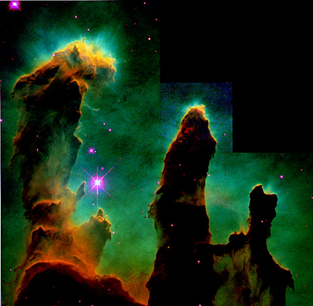

 A Star is Born.
This is a photograph released by NASA of the birth of stars found in M-16 Eagle Nebula. This shows about 50 stars formed in dense molecular hydrogen gas. This one of the HST picture gallery.
Congress:Downsize the Solar System.
Last updated: 10/14/99 MDT